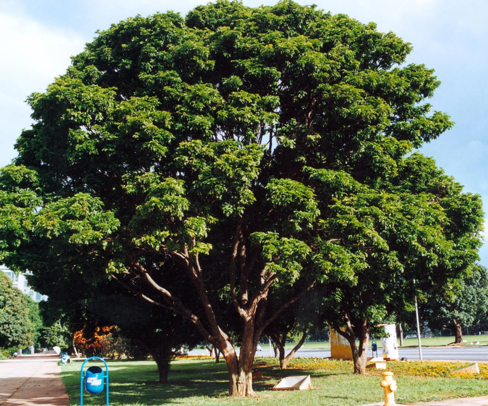

Meus projetos

Steingram: Um modelo de aplicativo
Este projeto é um começo de aplicativo feito no Figma, onde organizei minhas ideias criando um prototipo que no futuro poderá se tornar um belo e funcional aplicativo!

Decidindo o Futuro: Medicina Veterinária
Este projeto é sobre a profissão futura que desejo seguir, admirando-a!

Explorando o Universo feminino: Uma viagem sobre maquiagens!
Este projeto fala um pouco sobre a importâncias das maquiagens no mundo feminino, ou de quem goste de usar.
Catálogo de Mudas
Fale Conosco
Email: mudas@reflorestamento.org
Telefone: (41) 99999-9999
Instagram: @plantandoofuturo